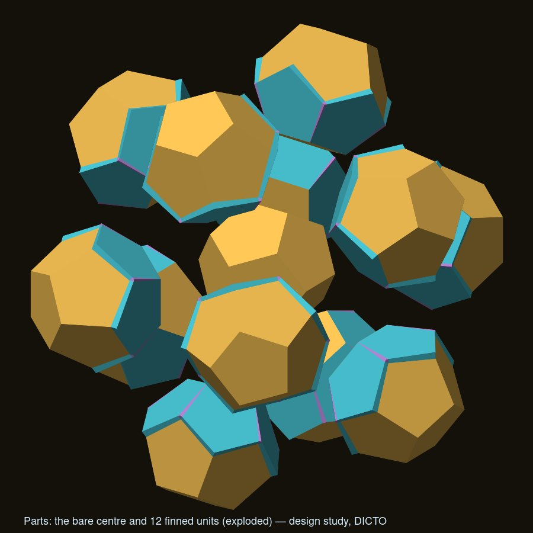
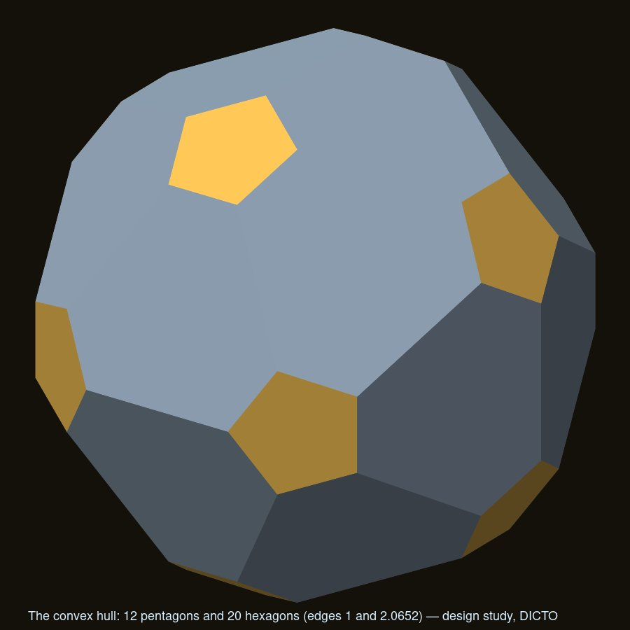
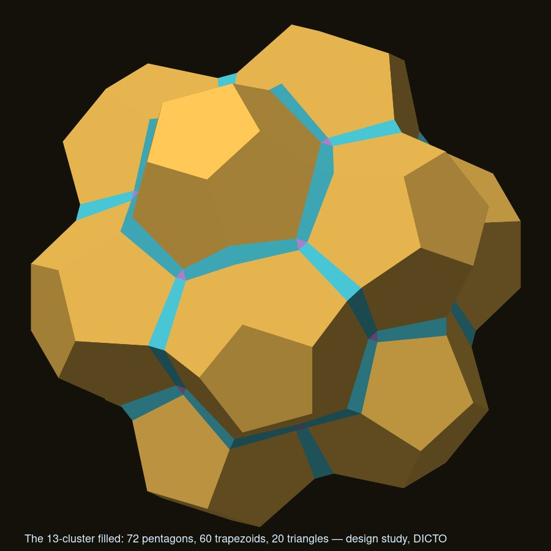
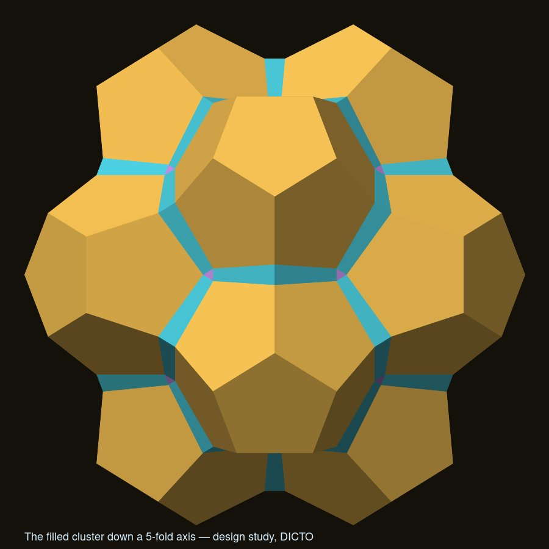
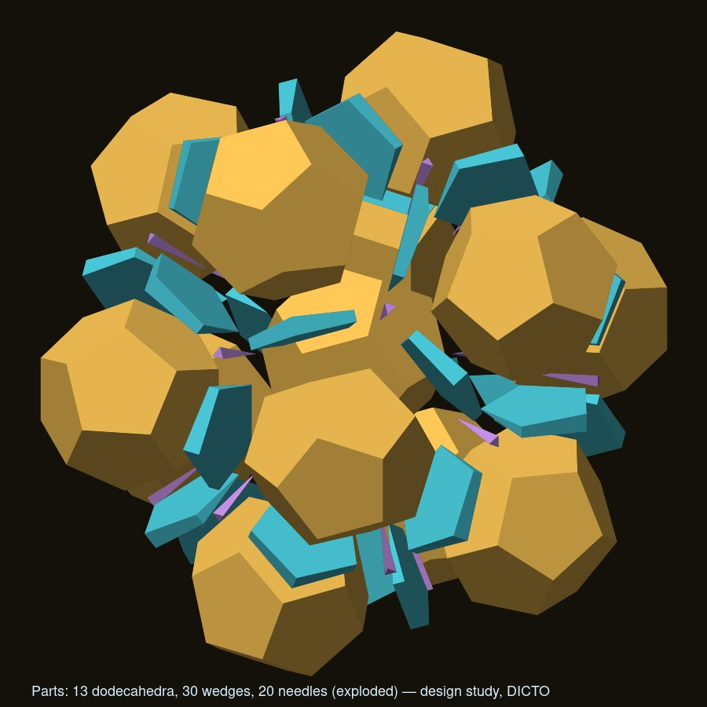
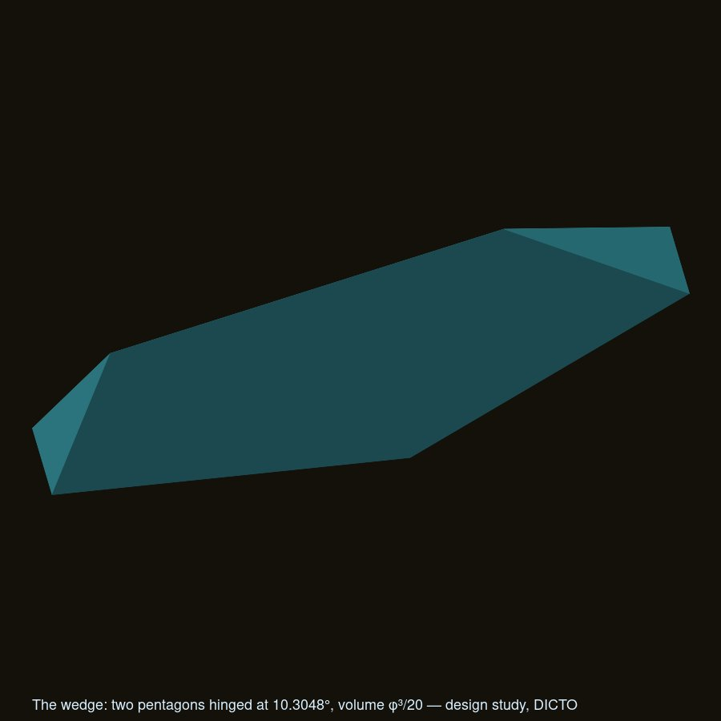
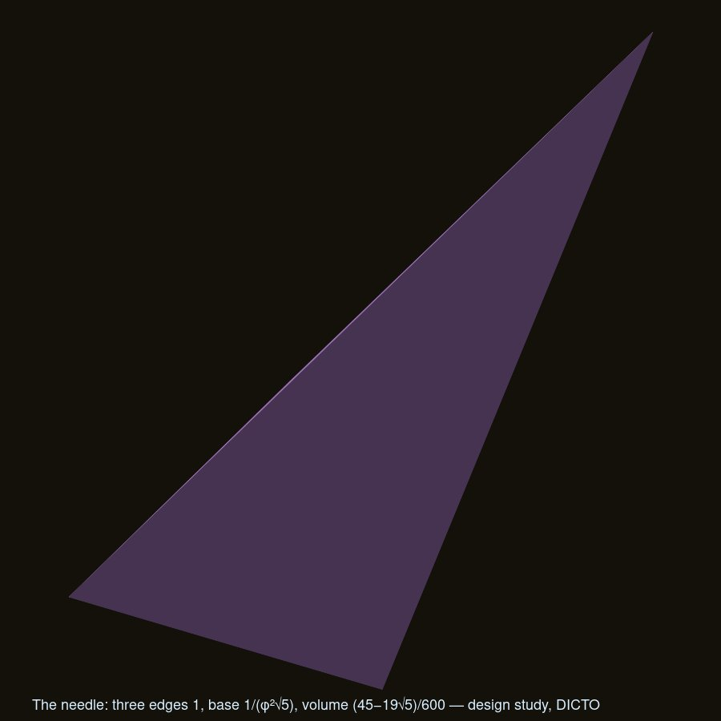
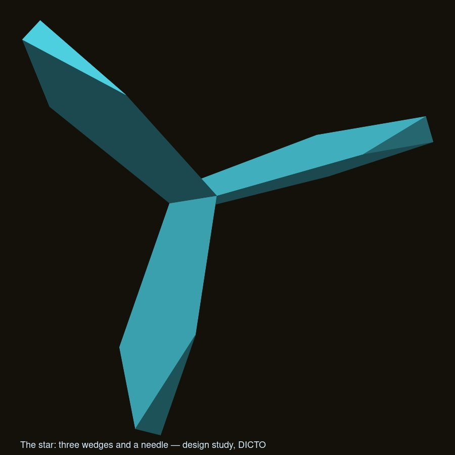
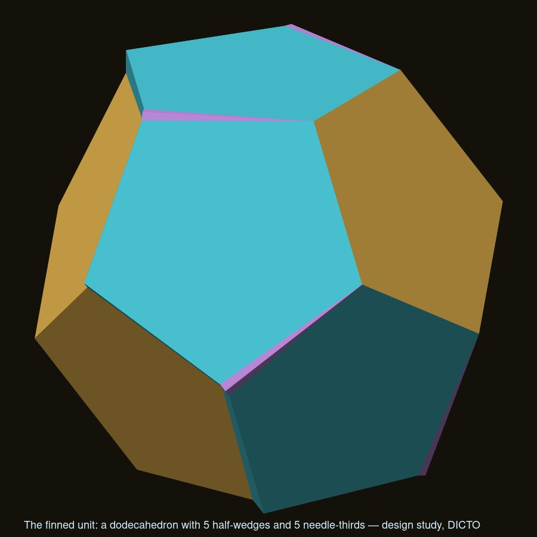

The 13-dodecahedron cluster made solid: its gaps as two exact pieces, and separable finned units
DICTO's cluster: "one dodecahedron at the center of a cluster", built in layers down a three-fold axis: a snowflake belt of six, three in the dimples on top, turned over, three more. Its earlier basis is DICTO's exhibition piece, a 12-dodecahedron cluster made of PET bottle caps and their security rings. DICTO asked for the cluster to be made solid, and for the solid to come apart again once built.



| Piece | Number | Shape (edge 1) | Volume |
|---|---|---|---|
| Wedge | 30, one per edge of the centre | two regular pentagons (the two neighbours' faces) hinged on the centre's edge at 10.3048°, closed by two end triangles and two outer trapezoids (sides 1, 1/(φ²√5), 1, 1/(φ√5)) | φ³/20 |
| Needle | 20, one per corner of the centre | a tetrahedron whose three long edges are the three neighbours' outer edges (length 1), on an equilateral base of side 1/(φ²√5) | (45 − 19√5)/600 |
The needle's three sides are the end triangles of the three wedges at its corner, so three wedges and a needle lock into a three-armed star (Fig. 6). Total volume: 13(15 + 7√5)/4 + 30·φ³/20 + 20·(45 − 19√5)/600 ≈ 106.058472.




Each wedge is symmetric across the mirror plane through the centre's edge, and each needle is three-fold about the line through its corner. So the wedges halve and the needles split into thirds along the same planes, and the solid divides into the bare centre and 12 congruent finned units, each an outer dodecahedron carrying 5 half-wedges and 5 needle-thirds as fins, which lifts straight out (Fig. 7–8). The parts views used in Polyhedraverse are: pieces (13 + 30 + 20), units (centre + 12), stars (13 + 20; the stars overlap, each wedge being in two of them).


Hull. The convex hull has the topology of the truncated icosahedron (60 corners, 12 pentagons, 20 hexagons) but is not Archimedean: the pentagons are regular with edge 1 (the outer dodecahedra's far faces), and the hexagons' edges alternate 1 and √((27 + 7√5)/10) ≈ 2.065248. Its volume is 142.955; the filled cluster fills 74.19% of it.
Packing. The filled cluster's densest translation-only packing, searched over 54 406 lattices built from its contact distances and checked independently, is body-centred cubic, with its 8 nearest neighbours along its three-fold axes, at density 0.7154. One block shape (the cluster plus its share of the remaining 28.5% as grown fins) therefore fills space by bcc translations; the fins are exact but chunky.
Relation to the DICTO-Star. The DICTO-Star (icosidodecahedron, 12 dodecahedra and 20 tridiminished icosahedra) is this cluster opened up: its 12 dodecahedra sit on the same 12 five-fold axes, but as parallel copies of the centre rather than mirror images; each outer dodecahedron turns 36° about its axis and moves out 0.262866 (edge 1), the wedges and needles open into the 20 dimples the J63s close, and the centre becomes the icosidodecahedron.
Corner sharing. Clusters sharing an outer dodecahedron can meet only across opposite faces; a cluster has at most 3 corner-sharing neighbours and no lattice of them exists. Face to face, the only repeating structure is a column of mirror-image clusters along a five-fold axis. (This is the icosahedral exception to the Kagome-hull rule, recorded separately.)
Beyond the cluster (studied, not claimed): a second shell along the six five-fold axes follows the golden-rhombohedron (Ammann–Kramer) tiling; decorated with dodecahedra it fills at most about 68% with whole-face contacts, and in the cubic 1/1 approximant it saturates at 162 dodecahedra per cell (67.35%), leaving one thin connected labyrinth.
Known and credited: the 10.3° gap of three dodecahedra round an edge is well known from the 120-cell and the geometric-frustration literature, which closes it by curving space or by twisting (e.g. Sadoc and Mosseri; Fang, Irwin et al. 2018). Jenczyk (2024) builds networks of regular dodecahedra joined by icosahedron-based binders. Vorthmann (vZome, 2014) shows a tetrahedral cluster of 120-cell dodecahedra. Not found (web-level search, 2026-10-09): the cluster's gaps as two exact solid pieces, and the separable finned units. This is not proof of novelty, and this record makes no claim of priority.
Included: data/, the study's solids (each with vertices, faces and exact volume, at the raw scale and at edge 1: the filled cluster, wedge, needle, half-wedge, needle-third, star, finned unit, the parts views, the hull, the column, the bcc packing and the grown unit); data/checks-dodeca13.txt (10 checks: each of the five solids closed, outward, Euler characteristic 2, with its exact volume; the 72 pentagons; every parts view's sum) and data/checks-dodeca-cluster.txt (11 checks: congruence, exact volumes, no overlap among the 63 solids by separating axes, every gap face accounted for, the halving and thirds), from krp-core v0.14.0. The Dodeca-13, Star, Unit, Wedge and Needle can be built in Polyhedraverse (https://polyhedraverse.dictospheres.com, DICTO's pieces), part of DICTO's open-source apps (concept DOI 10.5281/zenodo.23173809; previously archived there as version 10.5281/zenodo.23267578).